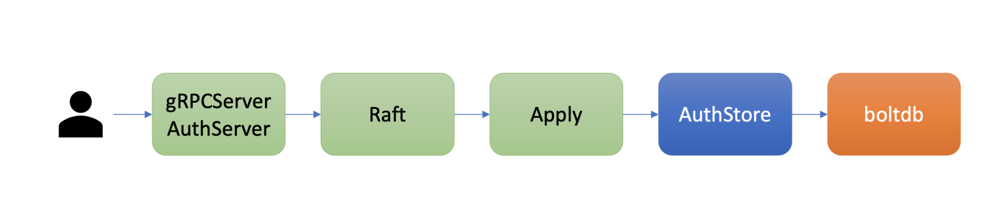
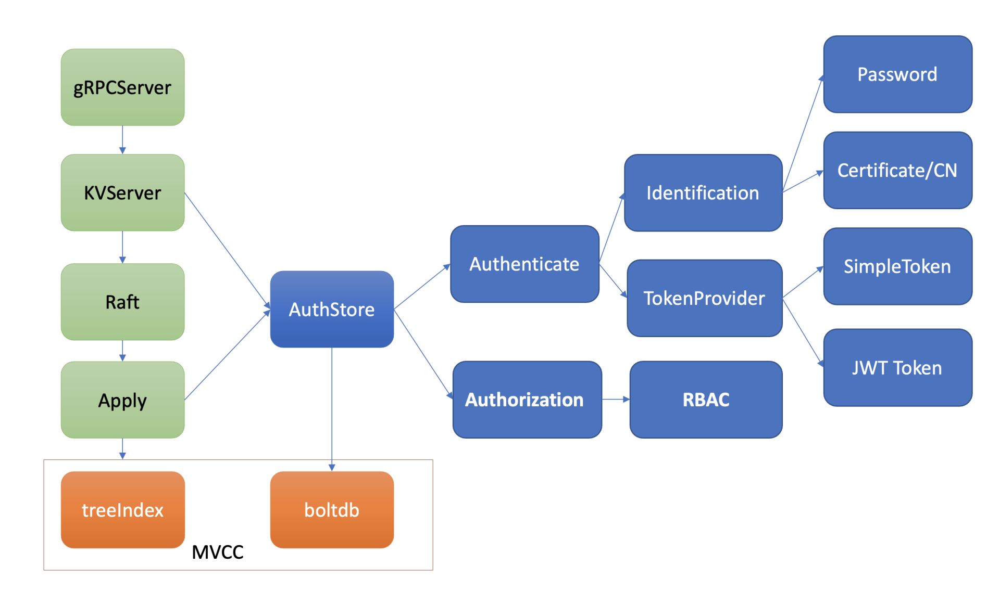
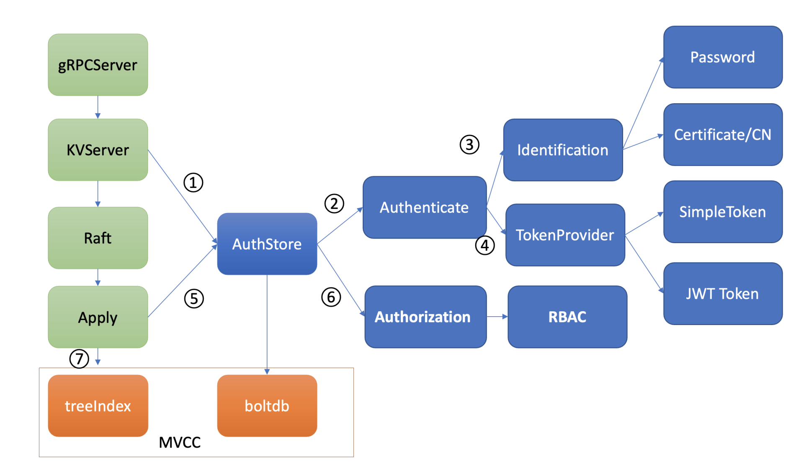
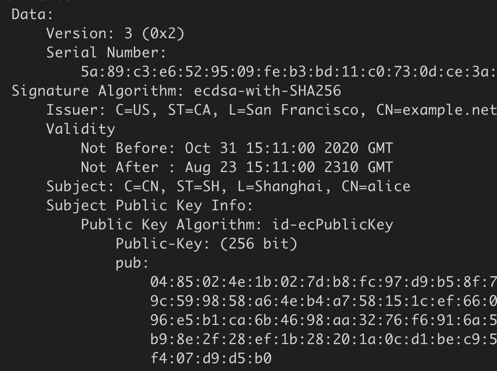
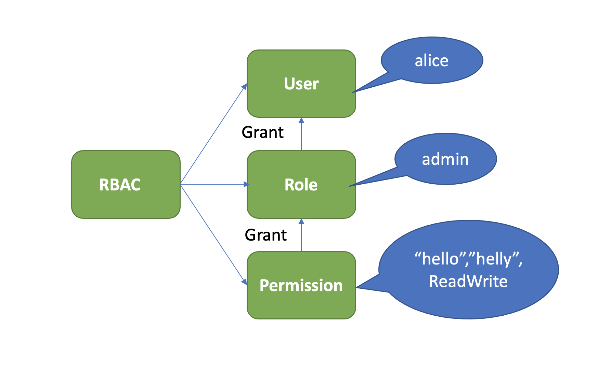

鉴权模块
整体架构
etcd鉴权体系架构由控制面和数据面组成。

上图是是etcd鉴权体系控制面，你可以通过客户端工具etcdctl和鉴权API动态调整认证、鉴权规则，AuthServer收到请求后，为了确保各节点间鉴权元数据一致性，会通过Raft模块进行数据同步。
当对应的Raft日志条目被集群半数以上节点确认后，Apply模块通过鉴权存储(AuthStore)模块，执行日志条目的内容，将规则存储到boltdb的一系列“鉴权表”里面。
下图是数据面鉴权流程，由认证和授权流程组成。认证的目的是检查client的身份是否合法、防止匿名用户访问等。目前etcd实现了两种认证机制，分别是密码认证和证书认证。

认证通过后，为了提高密码认证性能，会分配一个Token给client，client后续其他请求携带此Token，server就可快速完成client的身份校验工作。
实现分配Token的服务也有多种，这是TokenProvider所负责的，目前支持SimpleToken和JWT两种。
通过认证后，在访问MVCC模块之前，还需要通过授权流程。授权的目的是检查client是否有权限操作你请求的数据路径，etcd实现了RBAC机制，支持为每个用户分配一个角色，为每个角色授予最小化的权限。

密码鉴权
etcd支持为每个用户分配一个账号名称、密码。但密码认证存在两大难点，它们分别是如何保障密码安全性和提升密码认证性能。
如何保障密码安全性
我们首先来看第一个难点：如何保障密码安全性。
比如常见的MD5，SHA-1，还是不严谨，因为它们的计算速度非常快，黑客可以通过暴力枚举、字典、彩虹表等手段，快速将你的密码全部破解。
LinkedIn在2012年的时候650万用户密码被泄露，黑客3天就暴力破解出90%用户的密码，原因就是LinkedIn仅仅使用了SHA-1加密算法。
那应该如何进一步增强不可逆hash算法的破解难度？
一方面我们可以使用安全性更高的hash算法，比如SHA-256，它输出位数更多、计算更加复杂且耗CPU。
另一方面我们可以在每个用户密码hash值的计算过程中，引入一个随机、较长的加盐(salt)参数，它可以让相同的密码输出不同的结果，这让彩虹表破解直接失效。
彩虹表是黑客破解密码的一种方法之一，它预加载了常用密码使用MD5/SHA-1计算的hash值，可通过hash值匹配快速破解你的密码。
最后我们还可以增加密码hash值计算过程中的开销，比如循环迭代更多次，增加破解的时间成本。
etcd的鉴权模块如何安全存储用户密码？
etcd的用户密码存储正是融合了以上讨论的高安全性hash函数（Blowfish encryption algorithm）、随机的加盐salt、可自定义的hash值计算迭代次数cost。
下面我将通过几个简单etcd鉴权API，为你介绍密码认证的原理。
首先你可以通过如下的auth enable命令开启鉴权，注意etcd会先要求你创建一个root账号，它拥有集群的最高读写权限。
$ etcdctl user add root:root
User root created
$ etcdctl auth enable
Authentication Enabled
启用鉴权后，这时client发起如下put hello操作时， etcd server会返回"user name is empty"错误给client，就初步达到了防止匿名用户访问你的etcd数据目的。 那么etcd server是在哪里做的鉴权的呢?
$ etcdctl put hello world
Error: etcdserver: user name is empty
etcd server收到put hello请求的时候，在提交到Raft模块前，它会从你请求的上下文中获取你的用户身份信息。如果你未通过认证，那么在状态机应用put命令的时候，检查身份权限的时候发现是空，就会返回此错误给client。
下面我通过鉴权模块的user命令，给etcd增加一个alice账号。我们一起来看看etcd鉴权模块是如何基于我上面介绍的技术方案，来安全存储alice账号信息。
$ etcdctl user add alice:alice --user root:root
User alice created
鉴权模块收到此命令后，它会使用bcrpt库的blowfish算法，基于明文密码、随机分配的salt、自定义的cost、迭代多次计算得到一个hash值，并将加密算法版本、salt值、cost、hash值组成一个字符串，作为加密后的密码。
最后，鉴权模块将用户名alice作为key，用户名、加密后的密码作为value，存储到boltdb的authUsers bucket里面，完成一个账号创建。
当你使用alice账号访问etcd的时候，你需要先调用鉴权模块的Authenticate接口，它会验证你的身份合法性。
那么etcd如何验证你密码正确性的呢？
鉴权模块首先会根据你请求的用户名alice，从boltdb获取加密后的密码，因此hash值包含了算法版本、salt、cost等信息，因此可以根据你请求中的明文密码，计算出最终的hash值，若计算结果与存储一致，那么身份校验通过。
如何提升密码认证性能
通过以上的鉴权安全性的深入分析，我们知道身份验证这个过程开销极其昂贵，那么问题来了，如何避免频繁、昂贵的密码计算匹配，提升密码认证的性能呢？
这就是密码认证的第二个难点，如何保证性能。
想想我们办理港澳通行证的时候，流程特别复杂，需要各种身份证明、照片、指纹信息，办理成功后，下发通信证，每次过关你只需要刷下通信证即可，高效而便捷。
那么，在软件系统领域如果身份验证通过了后，我们是否也可以返回一个类似通信证的凭据给client，后续请求携带通信证，只要通行证合法且在有效期内，就无需再次鉴权了呢？
是的，etcd也有类似这样的凭据。当etcd server验证用户密码成功后，它就会返回一个Token字符串给client，用于表示用户的身份。后续请求携带此Token，就无需再次进行密码校验，实现了通行证的效果。
etcd目前支持两种Token，分别为Simple Token和JWT Token。
Simple Token
Simple Token实现正如名字所言，简单。
Simple Token的核心原理是当一个用户身份验证通过后，生成一个随机的字符串值Token返回给client，并在内存中使用map存储用户和Token映射关系。当收到用户的请求时， etcd会从请求中获取Token值，转换成对应的用户名信息，返回给下层模块使用。
Token是你身份的象征，若此Token泄露了，那你的数据就可能存在泄露的风险。etcd是如何应对这种潜在的安全风险呢？
etcd生成的每个Token，都有一个过期时间TTL属性，Token过期后client需再次验证身份，因此可显著缩小数据泄露的时间窗口，在性能上、安全性上实现平衡。
在etcd v3.4.9版本中，Token默认有效期是5分钟，etcd server会定时检查你的Token是否过期，若过期则从map数据结构中删除此Token。
不过你要注意的是，Simple Token字符串本身并未含任何有价值信息，因此client无法及时、准确获取到Token过期时间。所以client不容易提前去规避因Token失效导致的请求报错。
从以上介绍中，你觉得Simple Token有哪些不足之处？为什么etcd社区仅建议在开发、测试环境中使用Simple Token呢？
首先它是有状态的，etcd server需要使用内存存储Token和用户名的映射关系。
其次，它的可描述性很弱，client无法通过Token获取到过期时间、用户名、签发者等信息。
etcd鉴权模块实现的另外一个Token Provider方案JWT，正是为了解决这些不足之处而生。
JWT Token
JWT是Json Web Token缩写， 它是一个基于JSON的开放标准（RFC 7519）定义的一种紧凑、独立的格式，可用于在身份提供者和服务提供者间，传递被认证的用户身份信息。它由Header、Payload、Signature三个对象组成， 每个对象都是一个JSON结构体。
第一个对象是Header，它包含alg和typ两个字段，alg表示签名的算法，etcd支持RSA、ESA、PS系列，typ表示类型就是JWT。
{
"alg": "RS256"，
"typ": "JWT"
}
第二对象是Payload，它表示载荷，包含用户名、过期时间等信息，可以自定义添加字段。
{
"username": username，
"revision": revision，
"exp": time.Now().Add(t.ttl).Unix()，
}
第三个对象是签名，首先它将header、payload使用base64 url编码，然后将编码后的字符串用"."连接在一起，最后用我们选择的签名算法比如RSA系列的私钥对其计算签名，输出结果即是Signature。
signature=RSA256(
base64UrlEncode(header) + "." +
base64UrlEncode(payload)，
key)
JWT就是由base64UrlEncode(header).base64UrlEncode(payload).signature组成。
为什么说JWT是独立、紧凑的格式呢？
从以上原理介绍中我们知道，它是无状态的。JWT Token自带用户名、版本号、过期时间等描述信息，etcd server不需要保存它，client可方便、高效的获取到Token的过期时间、用户名等信息。它解决了Simple Token的若干不足之处，安全性更高，etcd社区建议大家在生产环境若使用了密码认证，应使用JWT Token( --auth-token 'jwt')，而不是默认的Simple Token。
接下来再介绍etcd的另外一种高性能、更安全的鉴权方案，x509证书认证。
证书鉴权
密码认证一般使用在client和server基于HTTP协议通信的内网场景中。当对安全有更高要求的时候，你需要使用HTTPS协议加密通信数据，防止中间人攻击和数据被篡改等安全风险。
HTTPS是利用非对称加密实现身份认证和密钥协商，因此使用HTTPS协议的时候，你需要使用CA证书给client生成证书才能访问。
那么一个client证书包含哪些信息呢？使用证书认证的时候，etcd server如何知道你发送的请求对应的用户名称？
我们可以使用下面的openssl命令查看client证书的内容，下图是一个x509 client证书的内容，它含有证书版本、序列号、签名算法、签发者、有效期、主体名等信息，我们重点要关注的是主体名中的CN字段。
在etcd中，如果你使用了HTTPS协议并启用了client证书认证(--client-cert-auth)，它会取CN字段作为用户名，在我们的案例中，alice就是client发送请求的用户名。
openssl x509 -noout -text -in client.pem

证书认证在稳定性、性能上都优于密码认证。
稳定性上，它不存在Token过期、使用更加方便、会让你少踩坑，避免了不少Token失效而触发的Bug。性能上，证书认证无需像密码认证一样调用昂贵的密码认证操作(Authenticate请求)，此接口支持的性能极低。
授权
当我们使用如上创建的alice账号执行put hello操作的时候，etcd却会返回如下的"etcdserver: permission denied"无权限错误，这是为什么呢？
$ etcdctl put hello world --user alice:alice
Error: etcdserver: permission denied
这是因为开启鉴权后，put请求命令在应用到状态机前，etcd还会对发出此请求的用户进行权限检查， 判断其是否有权限操作请求的数据。常用的权限控制方法有ACL(Access Control List)、ABAC(Attribute-based access control)、RBAC(Role-based access control)，etcd实现的是RBAC机制。
RBAC
什么是基于角色权限的控制系统(RBAC)呢？
它由下图中的三部分组成，User、Role、Permission。User表示用户，如alice。Role表示角色，它是权限的赋予对象。Permission表示具体权限明细，比如赋予Role对key范围在[key，KeyEnd]数据拥有什么权限。目前支持三种权限，分别是READ、WRITE、READWRITE。

下面我们通过etcd的RBAC机制，给alice用户赋予一个可读写\[hello,helly\]数据范围的读写权限， 如何操作呢?
按照上面介绍的RBAC原理，首先你需要创建一个role，这里我们命名为admin，然后新增了一个可读写\[hello,helly\]数据范围的权限给admin角色，并将admin的角色的权限授予了用户alice。详细如下：
# 创建一个admin role
$ etcdctl role add admin --user root:root
Role admin created
# 分配一个可读写[hello，helly]范围数据的权限给admin role
$ etcdctl role grant-permission admin readwrite hello helly --user root:root
Role admin updated
# 将用户alice和admin role关联起来，赋予admin权限给user
$ etcdctl user grant-role alice admin --user root:root
Role admin is granted to user alice
然后当你再次使用etcdctl执行put hello命令时，鉴权模块会从boltdb查询alice用户对应的权限列表。
因为有可能一个用户拥有成百上千个权限列表，etcd为了提升权限检查的性能，引入了区间树，检查用户操作的key是否在已授权的区间，时间复杂度仅为O(logN)。
在我们的这个案例中，很明显hello在admin角色可读写的\[hello，helly)数据范围内，因此它有权限更新key hello，执行成功。你也可以尝试更新key hey，因为此key未在鉴权的数据区间内，因此etcd server会返回"etcdserver: permission denied"错误给client，如下所示。
$ etcdctl put hello world --user alice:alice
OK
$ etcdctl put hey hey --user alice:alice
Error: etcdserver: permission denied